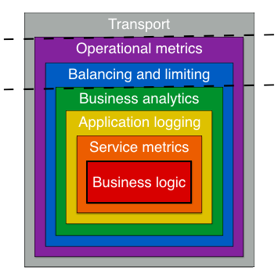

General
What is Go kit?
Go kit is a collection of Go (golang) packages (libraries) that help you build robust, reliable, maintainable microservices. It was originally conceived as a toolkit to help larger (so-called modern enterprise) organizations adopt Go as an implementation language. But it very quickly “grew downward”, and now serves smaller startups and organizations just as well. For more about the origins of Go kit, see Go kit: Go in the modern enterprise.
Why should I use Go kit?
You should use Go kit if you know you want to adopt the microservices pattern in your organization. Go kit will help you structure and build out your services, avoid common pitfalls, and write code that grows with grace.
Go kit can also help to justify Go as an implementation language to stakeholders like engineering managers or tech leads. Go kit de-risks both Go and microservices by providing mature patterns and idioms, written and maintained by a large group of experienced contributors, and validated in production environments.
Who is behind Go kit?
Go kit was originally conceived by Peter Bourgon, but is now built and maintained by a large group of contributors from a diverse set of backgrounds and organizations. Go kit is presently an all-volunteer effort, and has no commercial backing.
Is Go kit production-ready?
Yes. Go kit is being used in production in several organizations, large and small.
Which organizations are using Go kit?
Watch this space :)
How does Go kit compare to Micro?
Like Go kit, Micro describes itself as a microservice toolkit. But unlike Go kit, Micro also describes itself as a microservice ecosystem. It takes a broader view, encoding expectations and opinions about the infrastructure and architecture. In short, I think Micro wants to be a platform; Go kit, in contrast, wants to integrate into your platform.
Architecture and design
What is the design of a Go kit microservice?

Go kit models a microservice like an onion, with many layers. The layers can be divided into three domains.
The innermost service domain is where everything is based on your specific service definition, and where all of the business logic is implemented. The middle endpoint domain is where each method of your service is abstracted to the generic endpoint.Endpoint, and where safety and antifragile logic is implemented. Finally, the outermost transport domain is where endpoints are bound to concrete transports like HTTP or gRPC.
You implement the core business logic by defining an interface for your service and providing a concrete implementation. Then, you write service middlewares to provide additional functionality, like logging, analytics, instrumentation — anything that needs knowledge of your business domain.
Go kit provides endpoint and transport domain middlewares, for functionality like rate limiting, circuit breaking, load balancing, and distributed tracing — all of which are generally agnostic to your business domain.
In short, Go kit tries to enforce strict separation of concerns through studious use of the middleware (or decorator) pattern.
Why is func main always so big?
Go kit encourages you to design your services as multiple interacting components, including several single-purpose middlewares. Experience has taught me that the most comprehensible, maintainable, and expressive method of defining and wiring up the component graph in a microservice is through an explicit and declarative composition in a large func main.
This style reinforces two important virtues. By strictly keeping component lifecycles in main, you avoid leaning on global state as a shortcut, which is critical for testability. And if components are scoped to main, the only way to provide them as dependencies to other components is to pass them explicitly as parameters to constructors. This keeps dependencies explicit, which stops a lot of technical debt before it starts.
For more general Go design tips, see Go best practices, six years in.
How should I deploy Go kit services?
It’s totally up to you. You can build a static binary, scp it to your server, and use a supervisor like runit. Or you can use a tool like Packer to create an AMI, and deploy it into an EC2 autoscaling group. Or you can package your service up into a container, ship it to a registry, and deploy it onto a cloud-native platform like Kubernetes.
Go kit is mostly concerned with good software engineering within your service; it tries to integrate well with any kind of platform or infrastructure.
How should I encode errors?
Your service methods will probably return errors. You have two options for encoding them in your endpoints. You can include an error field in your response struct, and return your business domain errors there. Or, you can choose to return your business domain errors in the endpoint error return value.
Both methods can be made to work. But errors returned directly by endpoints are recognized by middlewares that check for failures, like circuit breakers. It’s unlikely that a business-domain error from your service should cause a circuit breaker to trip in a client. So, it’s likely that you want to encode errors in your response struct.
addsvc contains examples of both methods.
Specific components
Which transports are supported?
Go kit ships with support for HTTP, gRPC, Thrift, and net/rpc. It’s straightforward to add support for new transports; just file an issue if you need something that isn’t already offered.
Which service discovery systems are supported?
Go kit ships with support for Consul, etcd, ZooKeeper, and DNS SRV records.
Do I even need to use package sd?
It depends on your infrastructure.
Some platforms, like Kubernetes, take care of registering services instances and making them discoverable automatically, via platform-specific concepts. So, if you run on Kubernetes, you probably don’t need to use package sd.
But if you’re putting together your own infrastructure or platform with open-source components, then your services will likely need to register themselves with the service registry. Or if you have reached a scale where internal load balancers become a bottleneck, you may need to have your services subscribe to the system of record directly, and maintain their own connection pools. (This is the client-side discovery pattern.) In these situations, package sd will be useful.
Which monitoring systems are supported?
Go kit ships with support for modern monitoring systems like Prometheus and InfluxDB, as well as more traditional systems like statsd, Graphite, and expvar, and hosted systems like Datadog via DogStatsD and Circonus.
Which monitoring system should I use?
Why is package log so different?
Experience has taught us that a good logging package should be based on a minimal interface and should enforce so-called structured logging. Based on these invariants, Go kit’s package log has evolved through many design iterations, extensive benchmarking, and plenty of real-world use to arrive at its current state.
With a well-defined core contract, ancillary concerns like levels, colorized output, and synchronization can be easily bolted on using the familiar decorator pattern. It may feel a little unfamiliar at first, but we believe package log strikes the ideal balance between usability, maintainability, and performance.
For more details on the evolution of package log, see issues and PRs 63, 76, 131, 157, and 252. For more on logging philosophy, see The Hunt for a Logger Interface, Let’s talk about logging, and Logging v. instrumentation.
How should I aggregate my logs?
Collecting, shipping, and aggregating logs is the responsibility of the platform, not individual services. So, just make sure you’re writing logs to stdout/stderr, and let another component handle the rest.